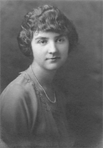

 |
Louise Dorothea SteinLouise Dorthea Stein was born in Oakland, California.
|
|
|
Important Facts
|
||
| November 3, 1898 | Louise Dorothea Stein was born in Oakland, California. She is the daughter of Dorthea Reismann and Lorenz Louis Stein. | |
| November 1, 1924 | Louise married Emil Ernest Gloor in Berkeley, California. |

Emil Ernest Gloor |
| October 8, 1925 | Nancy Louise Gloor was born in Alameda County, Oakland, California. Source: California Birth Index, 1905-1995. | |
| November 6, 1928 | Emil Herbert Gloor was born in Alameda County, Berkeley, California. Source: California Birth Index, 1905-1995. | |
| 1930 | The US Federal Census lists Emil E. Goor (46), Louise S. (31), Nancy L. (4), and Emil H. (1), living in Berkeley, Alameda, California. Source: Roll: 110; Page: 10B; Enumeration District: 282; Image: 869.0. | |
| 1940 | Louise Stein was listed in the 1940 US Census as age 39 along her husban Emil (56), and children Nancy (14) and Herbert (11) living at 80 Oak Ridge Road, Berkeley, California. Source: Ancestry.com. 1940 United States Federal Census. Provo, UT, USA. | |
| August 3, 1963 | Louise D. Gloor died in Berkeley, California. Source: California Death Index, 1940-1997. |